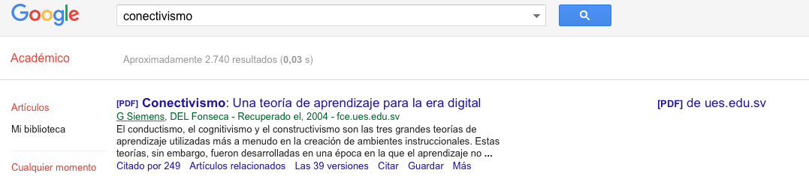
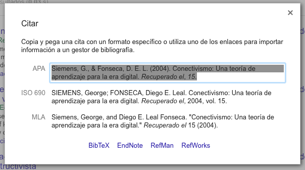

Psicología - Nivel 9, jornada vespertina - Otoño 2016 - UAC-SF · Prof. Hans Sigrist
¿Qué es investigar? La investigación es el proceso formal sistemático e intensivo de llevar a cabo un método de análisis científico. Se basa sobre el análisis crítico de proposiciones hipotéticas para el propósito de establecer relaciones causa efecto que deben ser probadas frente a la realidad objetiva. Este propósito puede ser ya la formulación teórica con la aplicación teoría conduciendo a la predicción. Best, J. (1981)
Estimadas estudiantes, he realizado cambios en las Líneas de Investigación propuestas, de modo que las nuevas atienden de manera más genérica a vuestra línea disciplinar y por otro lado se ubican dentro del alcance de mi praxis. Los nuevos enfoques se encuentran en el enlace Líneas de investigación. Tomar las acciones respectivas. De ser necesario, re-diseñen su anteproyecto utilizando el mismo recurso descrito en novedades el 29 de mayo. Saludos cordiales, Hans.
Estimadas estudiantes, reciban confirmación de la recepción de sus anteproyectos. Al respecto, deben saber que he revisado la totalidad de sus trabajos, y he podido observar un «desencuadre» metodológico en sus decisiones estratégicas. Con motivo de aquello, es que resulta de vital importancia que se retroalimenten primero, con una lectura previa (MLP) de carácter introductorio pero no menos significativo respecto del valor y trascendencia de un buen y estructurado trabajo, para ello siga el enlace siguiente Metodología de la Investigación (Sistematización & nuevos enfoques). En segundo lugar, la revisión de sus anteproyectos debo someterla a decisiones que se involucran evidenciar el actual estado del arte, y por otra parte, si se alinean con las «lineas de investigación» propuestas. De no ocurrir, lo anterior, deberán replantear su trabajo, en consideración a la relevancia de mis competencias y en relación a lo atingente de su anteproyecto. Tomar las acciones respectivas. Saludos cordiales, Hans.
Estimadas estudiantes, «el plagio académico invalida cualquier trabajo de investigación y conduce a la reprobación ipso facto de la tesina de grado» menciona la última línea de la página TES. Al respecto, y considerando los alcances del concepto, es necesario ahondar bajo qué circunstancias estamos frente a un plagio y cuándo no. No resulta natural creer que todo aquello que se cite es constitutivo de plagio, sin embargo tampoco resulta eficiente citar «entre comillas» sin ningún autocontrol, especialmente en ambientes académicos en dónde debieran proliferar razonamientos, reflexiones, críticas y resultados que aporten coherencia crítica a la investigación. Comparativamente, existe un uso común en estudiantes de nivel terciario a trasladar ideas ajenas al corpus de algún trabajo, sin reflexionar críticamente sobre la incorporada cita. Sugiero entonces, relevar con prácticas reflexivas cada cita que poble su corpus. De esta forma, brindará una coherencia y un valor agregado a su trabajo. Para profundizar al respecto, comparto con la Comunidad TES, un artículo del Director Nacional del Sello Formativo UAC, Dr. Fernando Vera, con quien trabajo actualmente en el desarrollo de mi propia tesina en el Magister en Docencia Universitaria (MDU), el mencionado artículo lo encuentra en el enlace siguiente: Que_es_el_plagio.pdf. Saludos cordiales, Hans.
Estimadas estudiantes, una herramienta de uso común en ambientes académicos y profesionales es Google Scholar, que corresponde a una fuente de acceso e información estrictamente académica. Nos permite acceder a información que no es posible visualizar en el buscador de uso corriente Google, ya que está enfocado a consultas sobre artículos, papers, conferencias, etc. Una gran virtud de esta herramienta es que permite citar la información consultada y además esta cita resulta ser actualizada y normalizada de modo que es posible insertarla en trabajos académicos respetando las normas APA. A modo de ejemplo, observe la siguiente imagen:
 La imagen muestra una coincidencia para la búsqueda «Conectividad», con ella se pueden realizar acciones como ver quiénes citaron el artículo, consultar búsquedas relacionadas, consultar versiones del artículo -útil cuando existen versiones posteriores mejoradas o actualizadas, Citar y guardar. De ellas, claramente la herramienta Citar es la más utilizada, como se aprecia en la siguiente imagen es posible recuperar información que resulta útil para su posterior inserción en el corpus de un trabajo investigativo:
 El primer paso es copiar esta información y pegarla en la sección citas de nuestro trabajo. Sin embargo, este proceso no es «limpio» ni menos el más adecuado. Pronto les comentaré como usar esta herramienta unido a otro proceso ahora desde el entorno Microsoft Word. Saludos cordiales, Hans.
Estimadas estudiantes, ante las posibles dudas y con el fin de establecer un dialogo más fluido favorezcan el envío de mensajería con copia a la comunidad toda, a menos que claro, se trate de una situación personal. Tomar las acciones respectivas. Saludos cordiales, Hans.
Estimadas estudiantes, la primera acción que se les solicita es realizar la descarga del Anteproyecto, y posteriormente cargar dicho insumo en el espacio dedicado a ello. El plazo, para la carga de su Anteproyecto será el viernes 02 de junio, 23:30PM del presente. Solicito atiendan a este requerimiento de manera oportuna y así podamos iniciar un trabajo selectivo en la toma de decisiones inicial. Saludos cordiales, Hans.
Estimadas estudiantes, he cargado recursos ad-hoc a las Líneas de investigación adscritas, de modo puedan indagar, explorando en los alcances de cada uno de los estudios. Anímense a explorar. Cordiales saludos, Hans.
Estimadas estudiantes, en todo proceso investigativo, la revisión de la literatura resulta un Factor Crítico de Éxito (FCE), en este sentido, solicito que aborden el estado del arte en lo referido a Metodología de la Investigación, en primer lugar, de modo puedan comprender cuáles son los alcances de las investigaciones en el área. Para ello, utilice el Método de la Lectura Previa (MLP) de los documentos que se indiquen en el espacio respectivo. Al mismo tiempo, solicito adhieran a alguna de las Líneas de Investigación sugeridas y que se mencionan en el espacio respectivo. Ante cualquier duda, utilizaremos la mensajería vía correo electrónico como medio de consulta. Más adelante les propondré medios alternativos que favorezcan la sincronía pero no presenciales. Saludos cordiales, Hans.
Estimadas estudiantes, reciban un cordial saludo. Junto con la confirmación de mi parte del liderazgo y guía de vuestras tesinas, quisiera invitarlas a integrar esta comunidad, cuyo resultado dará origen a la concreción de su tesina y posterior titulación. En esta página, se dispondrán las acciones principales para llevar a cabo su proceso investigativo. Por ello sugiero revisar periódicamente esta agenda, y con ello re-mapear sus acciones semanalmente. En adelante me referiré a este espacio como Comunidad, en el sentido que quienes la integran deben llevar a cabo acciones bajo la premisa del respeto mutuo y la convivencia con otros. Si bien el trabajo es individual, podemos realizar acciones en equipo con objeto de lograr metas comunes. Saludos cordiales, Hans.
En este espacio podrá cargar sus avances del anteproyecto, de la tesina y finalmente su versión final de la misma. Para efectos de orden y referencias históricas, solicito cautelar orden en el nombramiento de los archivos utilizando exclusivamente las indicaciones que se indiquen. Al respecto, sugiero utilizar el procesador de texto de Microsoft Office, con su conocido software Microsoft Word en versiones actualizadas e instaladas correctamente en un computador personal. Mantenga siempre respaldos de sus trabajos, para ello es buena idea utilizar repositorios online, e.g. Dropbox.
La carga de avances, debe ser realizada velando atender a los aspectos técnicos, especialmente los relacionados con el nombramiento de sus archivos. En la siguiente tabla, podrá observar avances simulados tanto para Anteproyecto, como para Tesina.
| Avance | Nombre archivo |
|---|---|
| 1 | Anteproyecto-tesina-Avance-1-Apellido-Nombre.docx |
| Anteproyecto-tesina-Avance-1-1-Apellido-Nombre.docx | |
| Anteproyecto-tesina-Avance-1-2-Apellido-Nombre.docx | |
| Anteproyecto-tesina-Avance-1-3-Apellido-Nombre.docx | |
| 2 | Anteproyecto-tesina-Avance-2-Apellido-Nombre.docx |
| Anteproyecto-tesina-Avance-2-1-Apellido-Nombre.docx | |
| 1 | Tesina-Avance-1-Apellido-Nombre.docx |
| Tesina-Avance-1-1-Apellido-Nombre.docx | |
| Tesina-Avance-1-2-Apellido-Nombre.docx | |
| 2 | Tesina-Avance-2-Apellido-Nombre.docx |
| Tesina-Avance-2-1-Apellido-Nombre.docx |
La carga de avances, en una primera etapa la realizaremos para el «Anteproyecto». Para ello, dirija su trabajo según la siguiente agenda de implementación.
| Historial | Estudiante | Profesor |
|---|---|---|
| 1 | Descarga Anteproyecto | - |
| 2 | Pobla contenido | - |
| 3 | Carga Anteproyecto en recurso dispuesto | - |
| 4 | - | Recepciona, revisa, comenta |
| 5 | - | Reenvía Anteproyecto (correo) |
| 6 | Recibe Anteproyecto | - |
| 7 | Realiza mejoras, atiende a comentarios (cumple plazos) | - |
| 8 | Paso 3 del Historial nuevamente | - |
En el enlace siguiente, descargue su Anteproyecto de Tesina, y proceda a poblarlo con la información solicitada. Investigue primero, un aprendiz profundo no se conforma con preguntar todo, aquello es más bien una «ilusión de competencias». Utilice tiempos de acción y trabajo disciplinados, no procrastine, y finalmente utilice la autorregulación en su sentido más amplio: autogestión, autoaprendizaje, autocontrol, autocuidado.
En el enlace siguiente, cargue su Anteproyecto de Tesina, respetando los aspectos de forma del mismo y atendiendo a los insumos solitados. La retroalimentación del mismo será evaluada con el status aprobado o rechazado. En este último caso, deberá realizar las mejoras y propuestas establecidas en la sección «Observaciones del evaluador» al final del documento.
Sírvase cargar su Anteproyecto en la fecha de se indique en la sección Novedades.
| Preguntas | Si | No | Observaciones |
|---|---|---|---|
| sugerencias mejora | |||
| 1. ¿El problema está claramente formulado? | |||
| 2. ¿El problema está contextualizado socialmente | |||
| y teóricamente? | |||
| 3. ¿Se señalan las aportaciones que realizará y | |||
| las implicaciones éticas si las hubiera? | |||
| 4. ¿Las preguntas son claras, sin ambigüedades o | |||
| posibles segundas interpretaciones? | |||
| 5. ¿Las preguntas y objetivos contienen errores | |||
| sintácticos, gramaticales o ortográficos? | |||
| 6. Los objetivos y las preguntas son | |||
| contrastables empíricamente? | |||
| 7. ¿Las preguntas y los objetivos son | |||
| suficientemente relevantes y pertinentes? | |||
| 8. ¿Los objetivos son congruentes con la | |||
| pregunta de investigación y son suficientes | |||
| para poder responderla? | |||
| 9. ¿Los constructos contenidos en las | |||
| preguntas y los objetivos han sido | |||
| especificados y concretados correctamente? | |||
| 10. ¿Se han formulado 3-5 keywords que | |||
| definen el estudio? | |||
| 11. Cuando habéis usado estos keywords en un | |||
| motor de búsqueda (como puede ser el | |||
| Google Scholar) este ha | |||
| podido localizar investigaciones/artículos | |||
| vinculados al keyword? |
Con el objeto de incrementar su conocimiento en investigación, se le solicita haga uso del Método de la Lectura Previa (MLP), mecanismo que le permitirá asimilar el contenido y dirigir su investigación de buena manera. Al respecto, se entrega a continuación una vitácora con los distintos recursos que se asignan para su lectura. Aquí, la acepciones utilizadas son las siguientes:
A continuación, encontrará diversos recursos que le permitirán complementar su trabajo.
La Tesina, corresponde a un trabajo de finalización exigido a los estudiantes de la carrera de Psicología, con objeto de optar a la obtención de su título. Ésta, refleja la metodología y los resultados de una investigación de carácter cualitativa, en el campo de la Psicología.
Iniciaremos con la inscripción del tema a investigar, presentada en el formato dispuesto para tales efectos por el profesor guía, enviada al mismo, quien posteriormente la aprobará o en su defecto, emitirá las observaciones respectivas que contribuyan a su mejoramiento. La asesoría del profesor guía se realizará tanto en reuniones presenciales con el o la estudiante tesista, como a través de la plataforma (blog), cautelando respaldar todas las acciones realizadas.
La calidad del documento final, es de responsabilidad de cada estudiante, en este sentido, la supervisión del profesor guía no incluye necesariamente la revisión de aspectos de forma relacionados con la ortografía o gramática. La principal función del supervisor de tesina, es cautelar aspectos de fondo con la coherencia constructiva que el documento final debe exhibir.
La estructura de la tesina, considera que los elementos básicos a tener en cuenta son aquellos que se describen y que se deben considerar para el desarrollo de dicho trabajo. La aplicación de los conocimientos adquiridos a lo largo de la carrera de Psicología deberá abordarla en una situación concreta relacionada con alguna de las líneas de investigación existentes en la carrera.
Como sea, el tema desarrollado debe sustentarse en la revisión de una amplia bibliografía, que refleje el estado del arte de la temática en discusión, bajo las normas APA, 6ta. versión.
La estructura de la tesina deberá incluir las siguientes partes:
Con el objeto de delimitar tanto su trabajo como el mío, sugiero lleve a cabo una indagatoria de tipo exploratoria en los siguientes documentos, que reflejan el estado del arte en líneas de investigación en las Instituciones de Educación Superior (IES), tanto en Chile como en el extranjero; y en lo declarativo, se incluyen algunos artículos relacionados. Solicito haga las relaciones pertinentes con objeto de encauzar su trabajo hacia una línea investigativa que podamos transitar en coherencia con presencia académica y futuramente profesional.
Las líneas de acción sugeridas son las siguientes:
Algunas referencias,
El Informe final deberá respetar los siguientes aspectos:
El plagio académico invalida cualquier trabajo de investigación y conduce a la reprobación ipso facto de la tesina de grado.